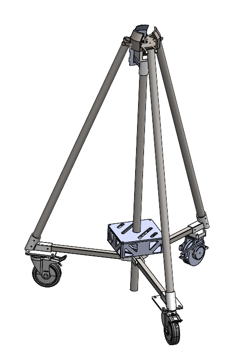
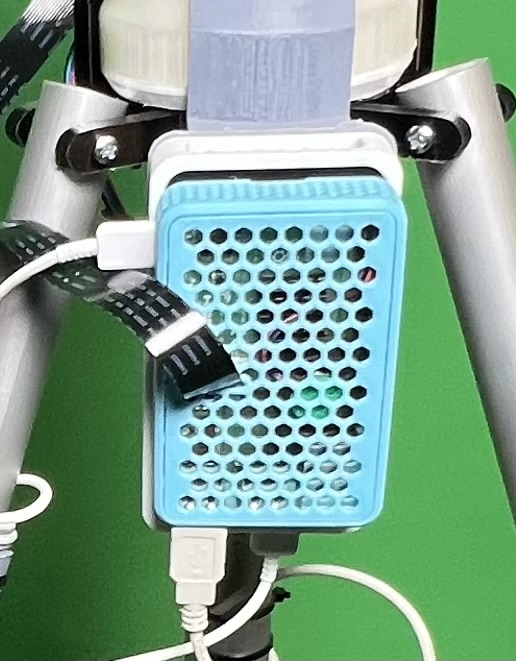
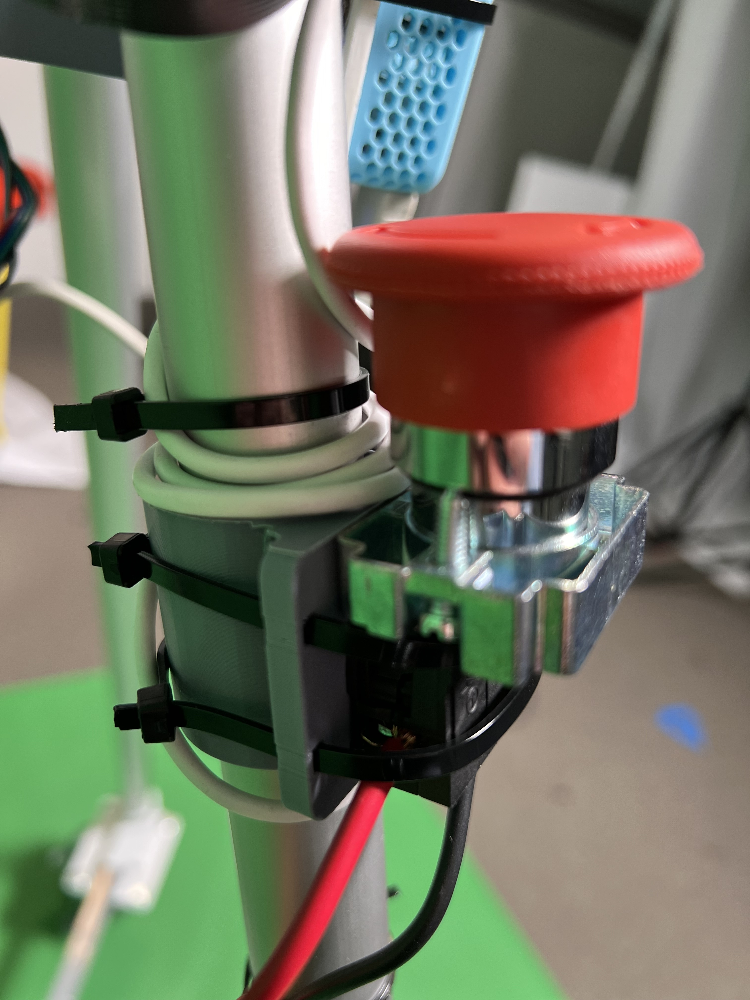

Tripod and Electrical Housing




The tripod featured three side legs, each connected to a wheel assembly, and a central leg, all constructed from aluminum circular tube stock to accommodate the stepper motor. To enhance stability, a triangular base made from rectangular aluminum stock was incorporated at the bottom. Additionally, when using a motorized wheel, a rectangular stock base was introduced to facilitate the passage of wiring from the electrical enclosure at the base, down the tube to that specific wheel.
Several electrical enclosures were integrated into the system, including one at the base, one connecting all tripod legs, and one on a side leg housing the start/stop button.